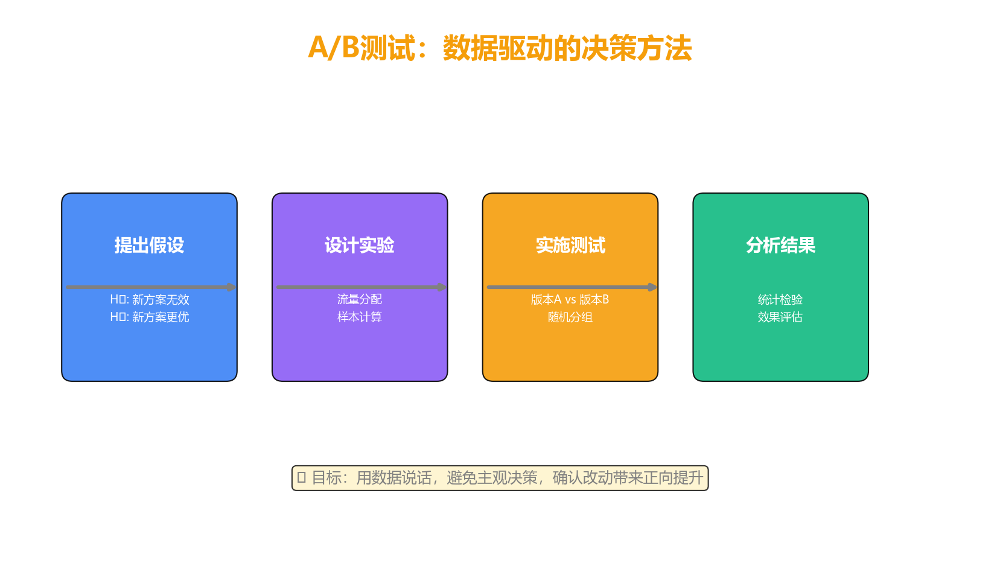
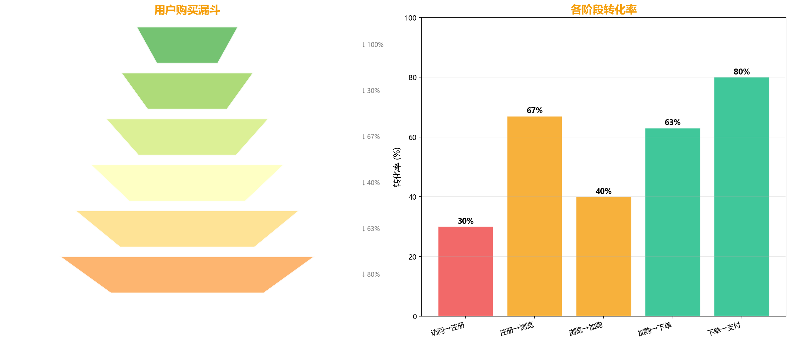
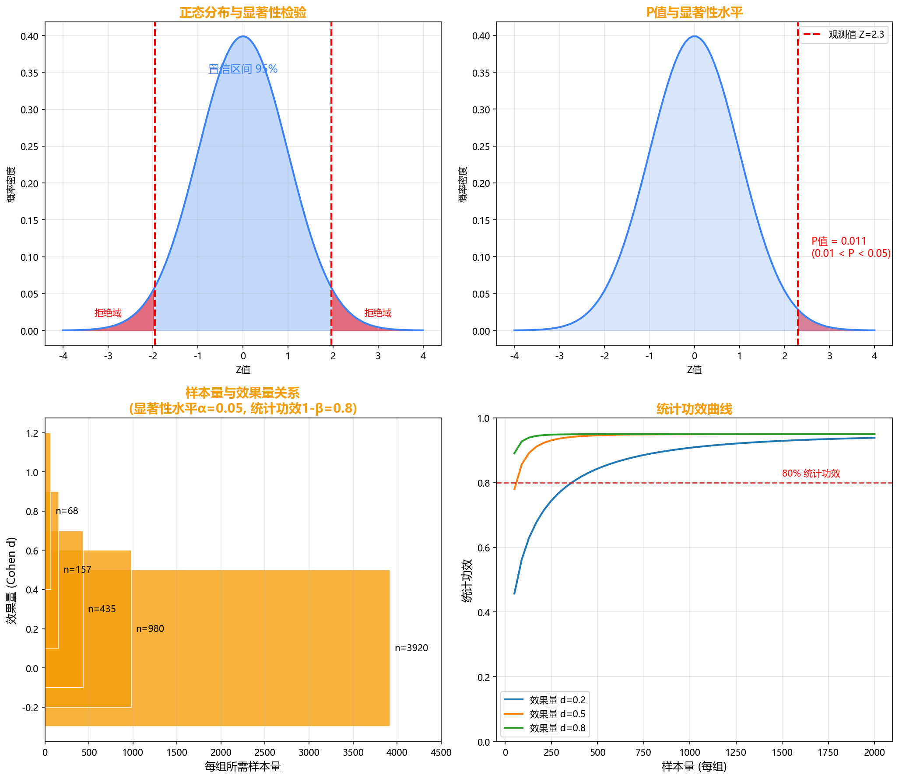
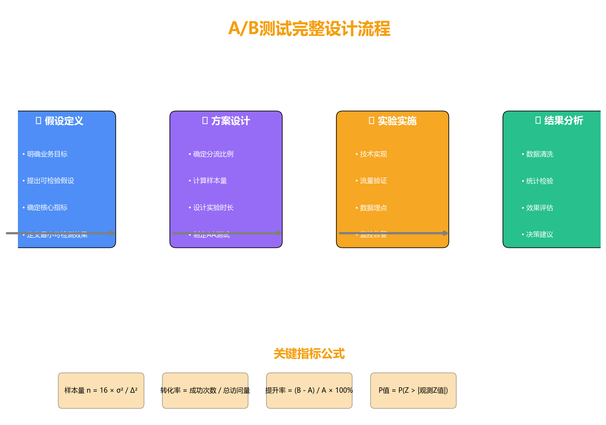
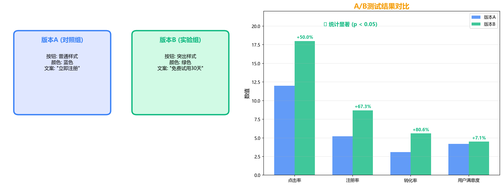
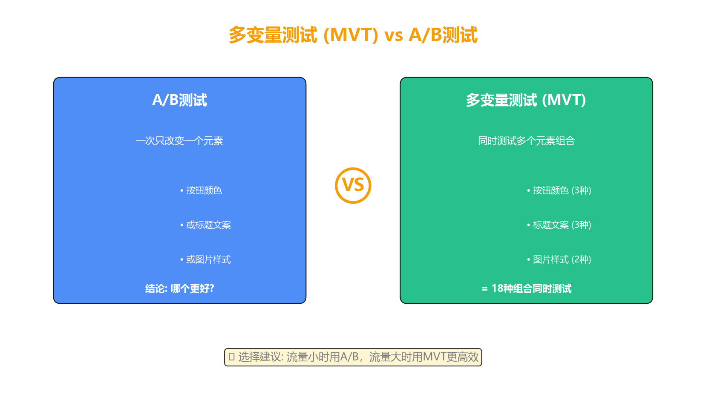
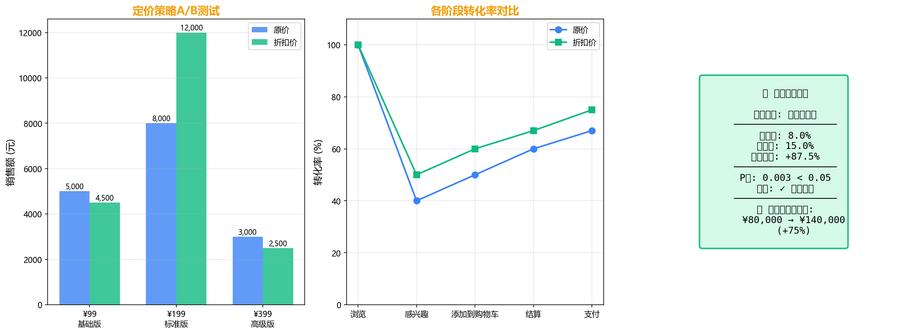
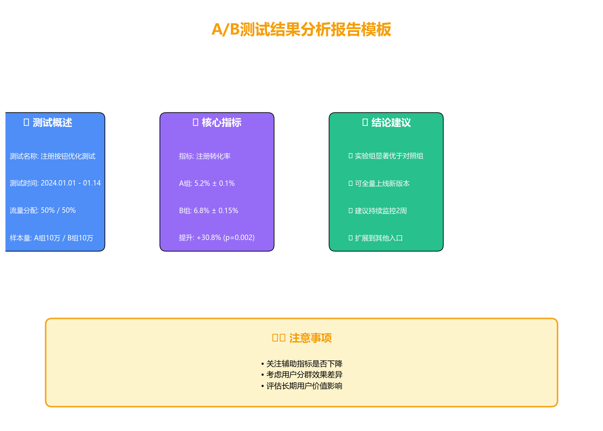
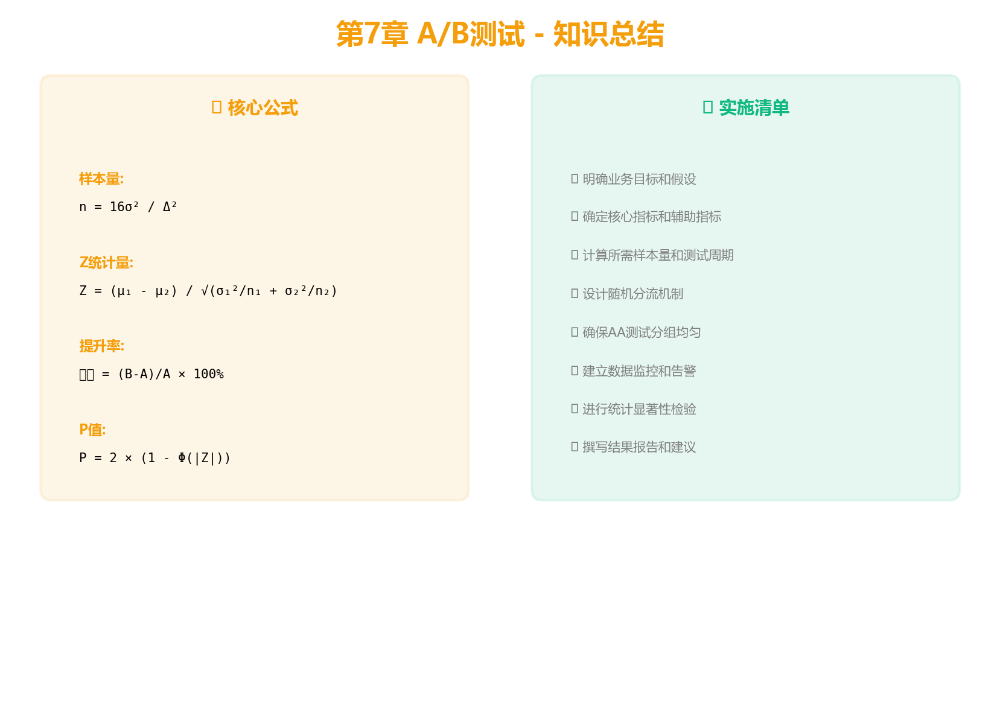

A/B测试是一种对照实验方法，通过将用户随机分配到对照组和实验组，比较不同方案的效果差异，用数据驱动决策。



基准转化率5%，想检测10%相对提升
所需样本量：约 31,000 / 组

先计算样本量，再开始实验！
避免" peek" - 不要提前看结果

所有核心指标均达到统计显著 (P < 0.05)
建议：全量上线新版本

假设：按钮3种 × 标题3种 × 图片2种
总组合数 = 3 × 3 × 2 = 18种
必须达到计算样本量
延长测试周期观察
AA测试验证分流

调整定价策略，突出标准版性价比
预估月收入增加约75%

在正式A/B测试之前，先进行AA测试，即两个对照组的测试，用于验证分流是否均匀。
使用AI辅助，测试设计效率提升40%
与业务方充分沟通，确保测试有意义

每次改动都应通过A/B测试验证效果
假设你负责产品优化，需要测试新的促销方案：
通常1-2周，确保覆盖完整用户周期。流量大可缩短。
看置信区间和业务成本，有时统计显著但实际提升太小不值得。
可以，但需控制FDR或增加样本量。多变量测试更高效。
学习如何撰写专业的分析报告，将洞察转化为行动
感谢学习！
掌握A/B测试，用数据驱动产品优化